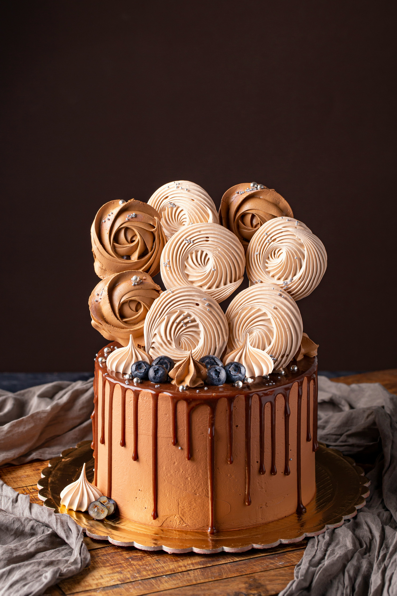

Beautiful Cakes Collection
Signature Celebration Cakes
This beautiful custom cake is natively designed with thick buttercream frosting and intricate sugar piping. Perfect for birthdays, weddings, and massive family gatherings where everybody gets a premium slice.